寻访机关前辈，赓续东大薪火
“寻红色记忆根脉，育红旅项目新篇”主题社会实践
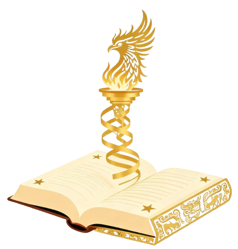
👥 团队阵容
指导老师
顾苏楠

朋辈指导
齐琪
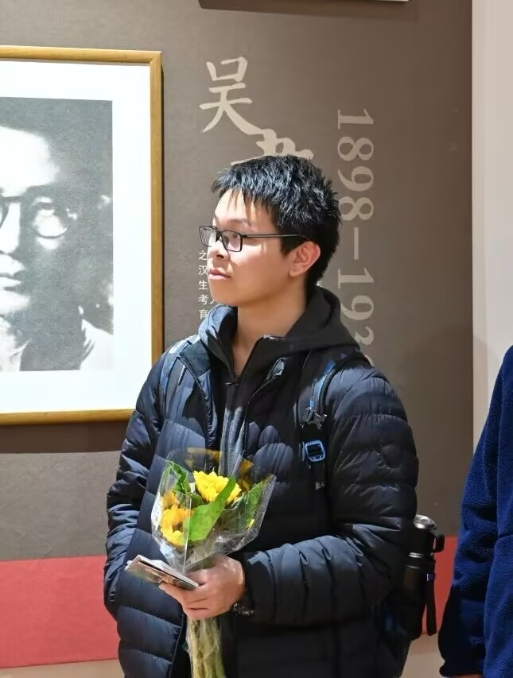
队长
郑宇轩
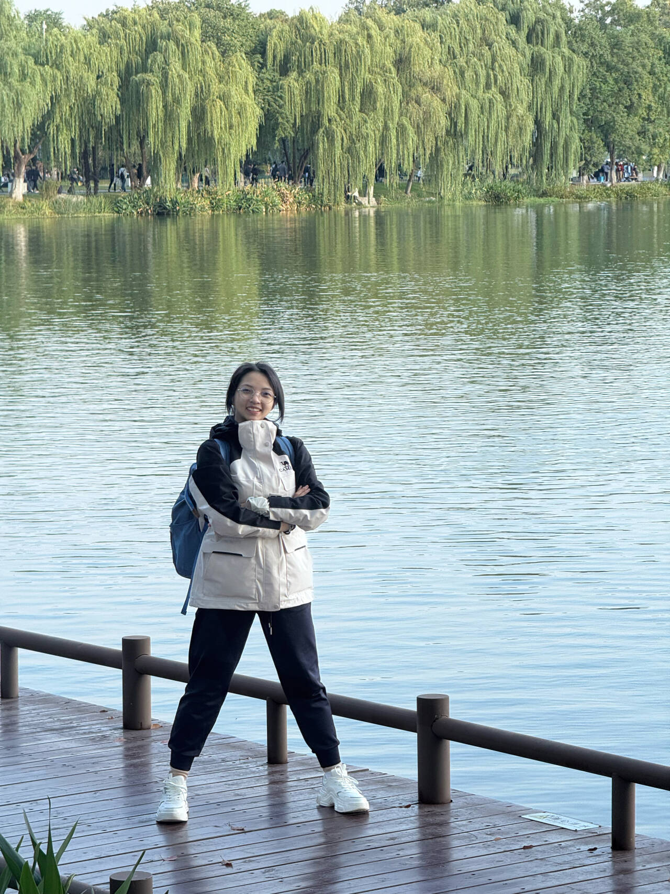
组长
夏雨杨
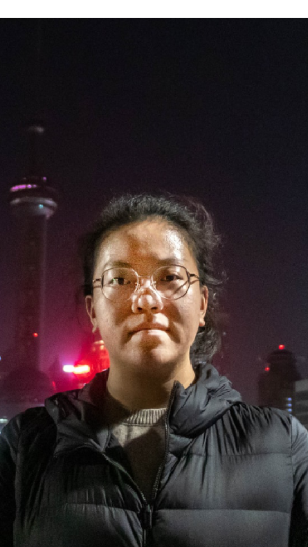
组长
孙旻萱
组长
刘子豪

组长
万淞婴
队员
伍俊杰
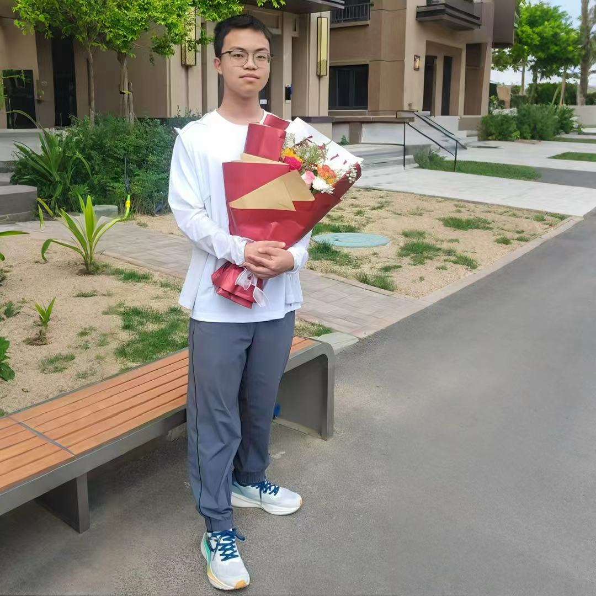
队员
李嘉行
队员
刘峻福

队员
占妍
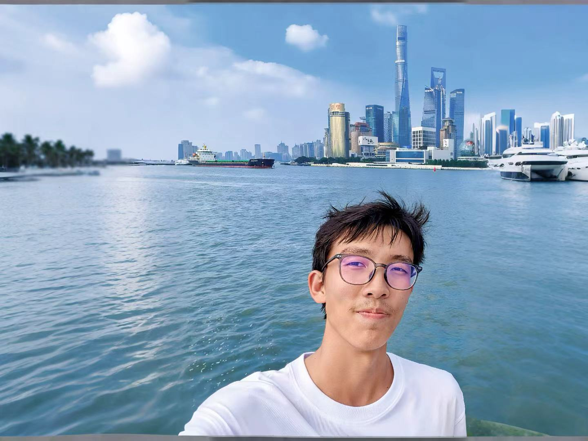
队员
李悠舸
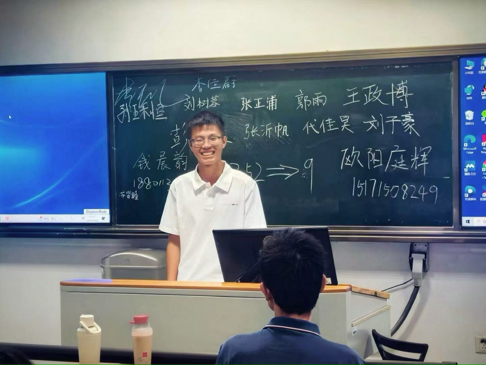
队员
黄千城
📜 访谈老同志纪实

访谈对象：陈笃信教授
党支部：教务处党支部
访谈感悟：深切感受到老一辈东大人对教育事业的忠诚与坚守...
 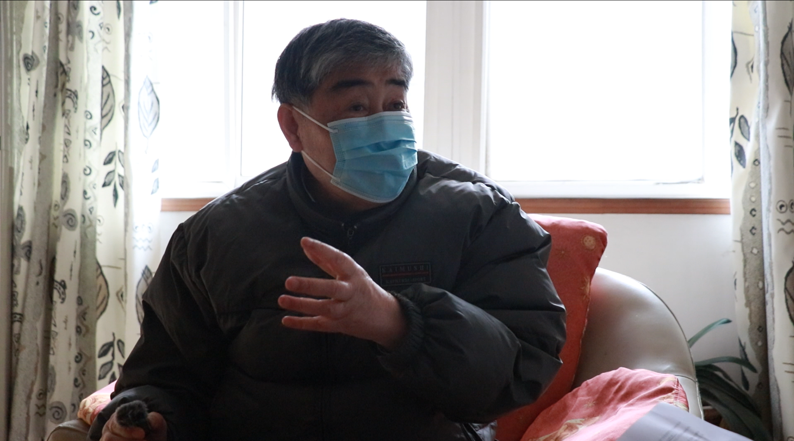
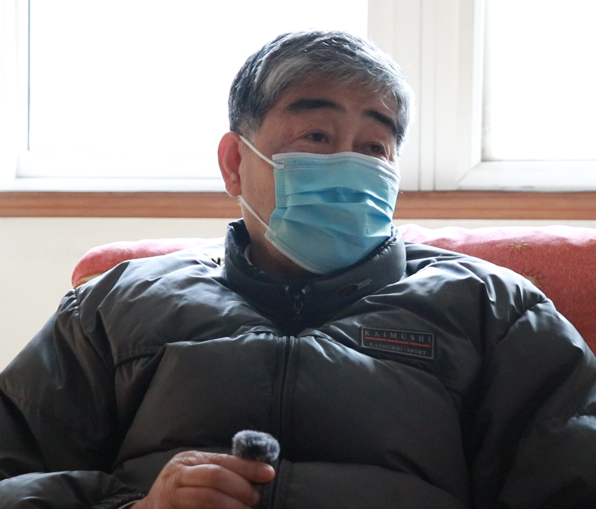
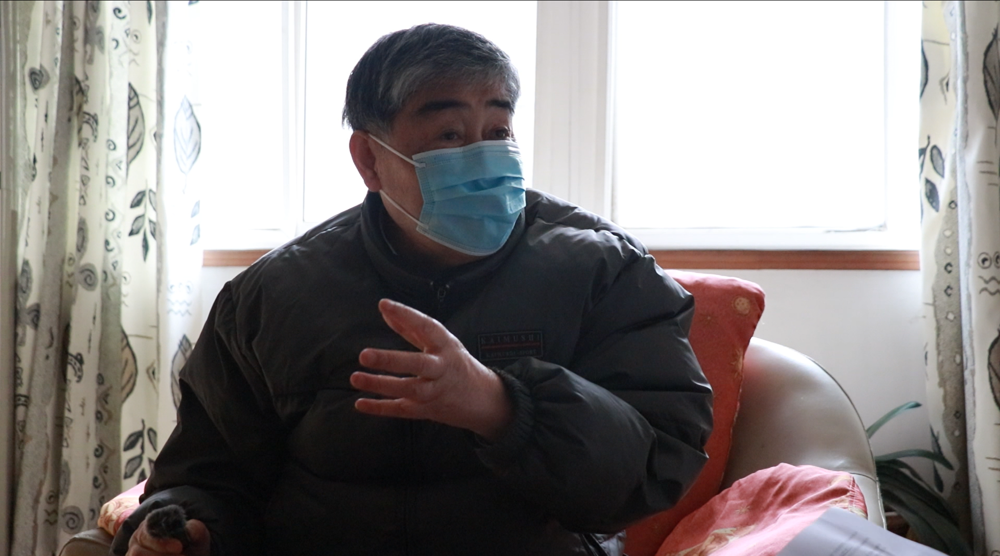
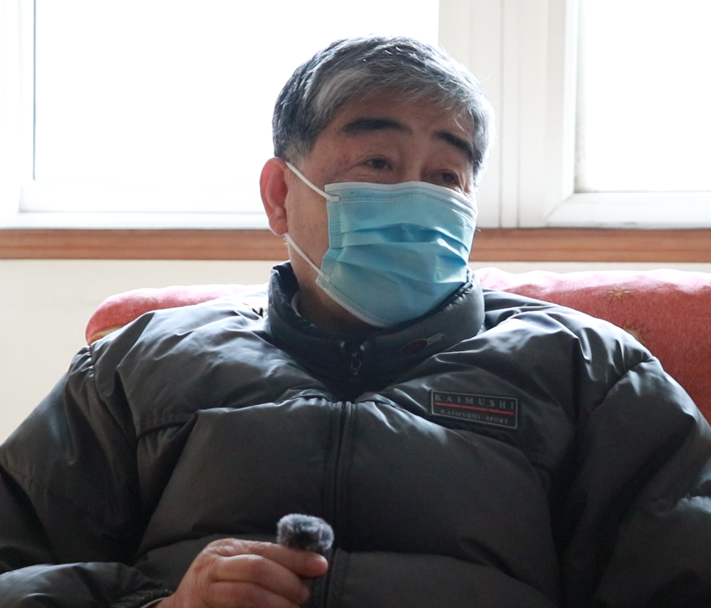
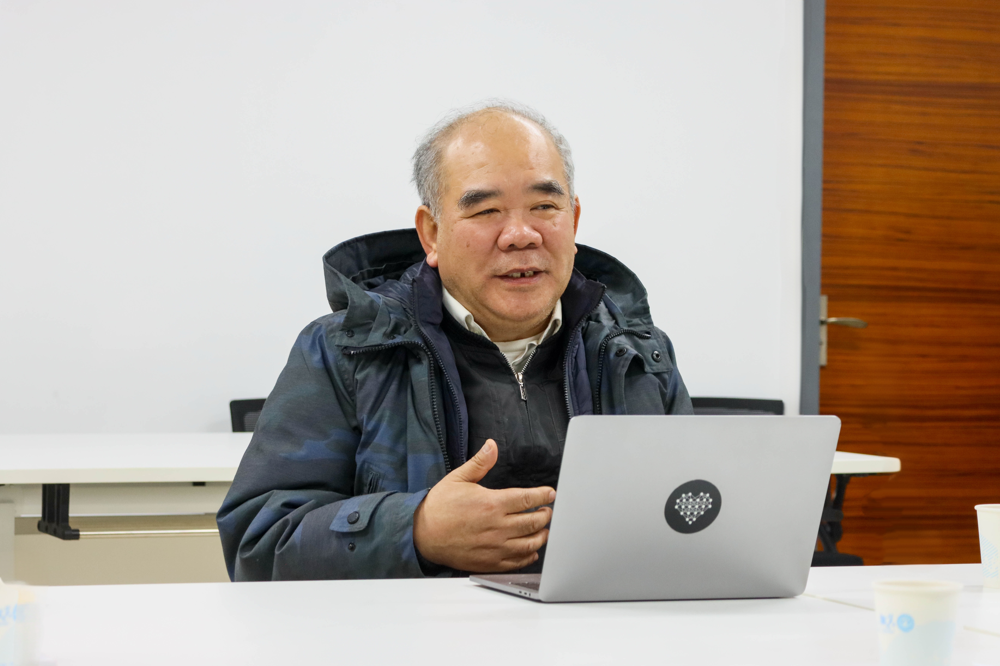
访谈对象：林萍华教授
党支部：校长办公室党支部
访谈感悟：机关精神的传承，在于服务师生的每一个细节之中...

访谈对象：董本植教授
党支部：学生处党支部
访谈感悟：老先生强调，机关工作要以学生为本，每一份文件背后都是学子的成长...

访谈对象：陈怡教授
党支部：发展规划与学科建设部（处）党支部
访谈感悟：从学科建设的宏观视野，读懂东大机关前辈的战略眼光与薪火相传...


🏆 访谈成果展示
🎥 实践总结纪录片
🎤 成员感悟微分享